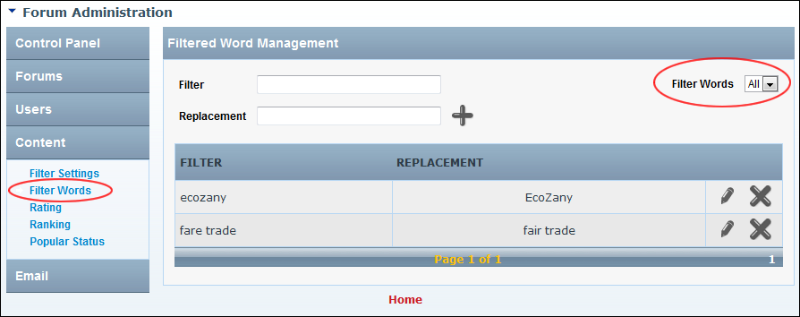

Filtering Filter Words
How to view all filtered words or filter them by the first letter of the filtered word for the Forum module.
- Go to the Forum Administration page. See "Navigating to the Forum Admin Page"
- In the left-hand panel, select Content > Filter Words. This displays the Filtered Word Management window.
- At the Filter Words drop down list, select All to view all words- OR - Select the first letter of the filtered word. This displays matching results in alphabetical order. Note: Use the linked page numbers to navigate to words displayed on another page.

Filtering Filtered Words
Tip: The filter will continue to be applied until you either click the All link or navigate to another section and then return to the Filtered Word Management section.